Filmed this week
What changed →-
Updated0:38Scenario editor · DemandJobs
-
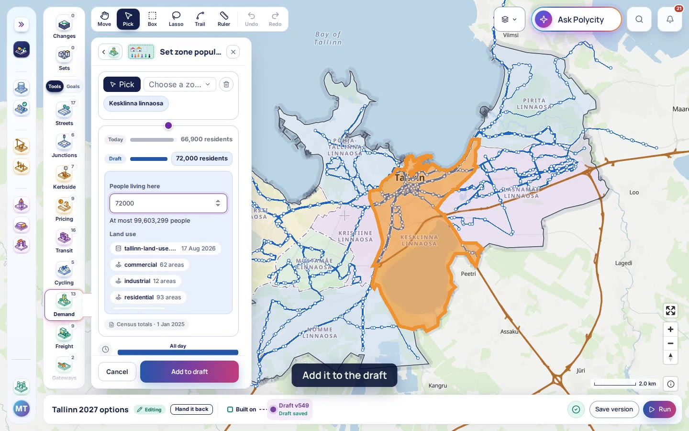
Updated0:38Scenario editor · DemandDistrict population -
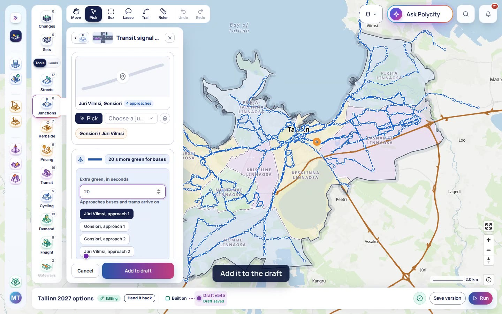
Updated0:43Scenario editor · JunctionsTransit signal priority -
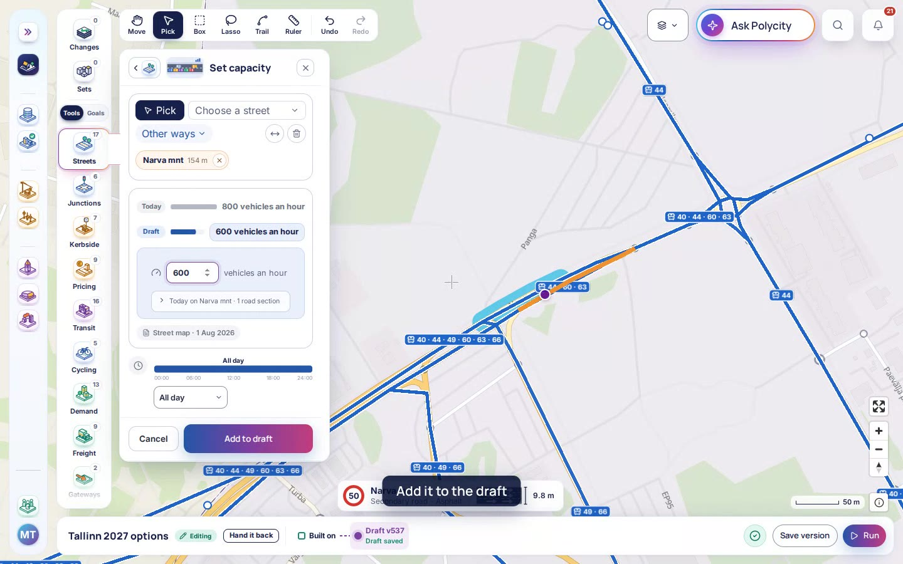
Updated0:56Scenario editor · StreetsSet capacity -
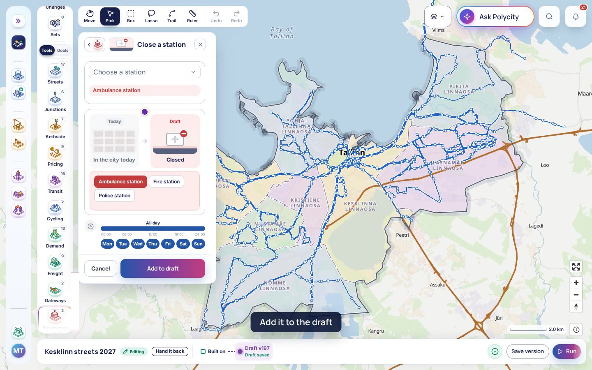
Updated0:30Scenario editor · EmergencyClose a station -
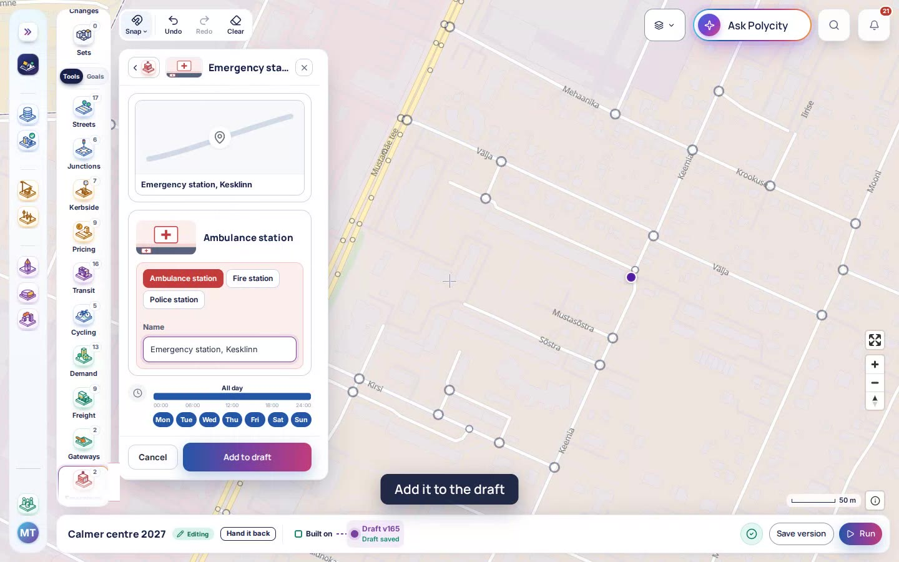
Updated0:42Scenario editor · EmergencyEmergency station -
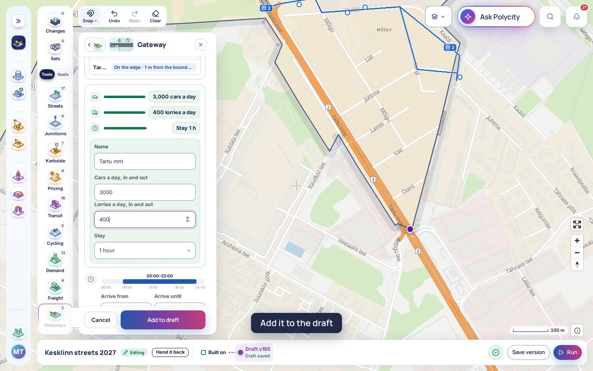
Updated1:14Scenario editor · GatewaysGateway -
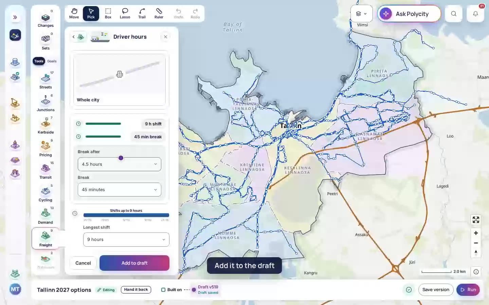
Updated0:23Scenario editor · FreightDriver hours
By area 46
Every workflow 46
| Film | Workflow | Part | Steps | Filmed |
|---|---|---|---|---|
 0:56 0:56 |
Blocked laneBlock one lane of a street, as roadworks or a parked delivery would. | Close | New | |
| 0:56 | Set capacityChange how many vehicles an hour a street can carry. | Speed and lanes | Updated 2 Oct 2026 | |
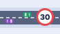 1:04 |
Set speed limitLower or raise the speed limit on the streets you pick. | Speed and lanes | Updated 2 Oct 2026 | |
 0:45 0:45 |
One-way streetMake a street one-way, in the direction you choose. | Who may use it | New | |
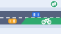 0:52 |
Reallocate laneGive one lane of a street to buses, bikes or deliveries. | Who may use it | Updated 2 Oct 2026 | |
 0:59 0:59 |
Freight restrictionKeep lorries off a street, or let them in only at certain hours. | Who may use it | New | |
 1:04 1:04 |
Reshape a streetMove the line a street follows, keeping both its ends. | Build | New | |
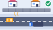 0:52 |
Noise wallDraw a noise wall along a street. | Noise | Updated 2 Oct 2026 | |
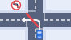 0:48 |
Ban turnBan one turn at a junction. | Turns | Updated 2 Oct 2026 | |
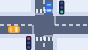 0:44 |
Junction controlChoose how a junction is run: traffic lights, a roundabout or right of way. | Signals | Updated 2 Oct 2026 | |
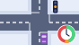 0:53 |
Signal timingSet how long each light at a junction stays green. | Signals | Updated 2 Oct 2026 | |
| 0:43 | Transit signal priorityGive buses and trams a green light as they reach a junction. | Signals | Updated 2 Oct 2026 | |
 1:25 1:25 |
Junction studyDraw a junction to study closely, vehicle by vehicle. | Study | New | |
 0:31 0:31 |
Workplace parking levyCharge employers for each parking space they give their staff in an area. | Parking | New | |
 0:43 0:43 |
Park and ridePlace a park and ride site beside a bus or tram stop. | Parking | New | |
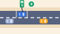 1:02 |
Charging stationPlace a charging station for electric cars. | Kerb | Updated 2 Oct 2026 | |
 0:37 0:37 |
Toll cordonDraw a charging cordon around an area. | Road charges | New | |
 0:37 0:37 |
Charge scheduleSet what drivers pay to enter an area, hour by hour. | Road charges | New | |
 0:31 0:31 |
Distance chargeCharge drivers for each kilometre they drive inside an area. | Road charges | New | |
 0:33 0:33 |
Low-emission zoneDraw a low-emission zone. | Low-emission zone | New | |
 0:33 0:33 |
Vehicle class accessChoose which kinds of vehicle may enter a low-emission zone. | Low-emission zone | New | |
 0:37 0:37 |
On-demand shuttleDraw an area served by shuttles that come when called. | On demand | New | |
 0:59 0:59 |
Shuttle hubPlace a hub where shuttles wait between trips. | On demand | New | |
 0:28 0:28 |
Taxi fleetSet how many taxis serve the city and what they cost. | On demand | New | |
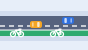 0:59 |
Cycle laneAdd a cycle lane to a street. | Cycling | Updated 2 Oct 2026 | |
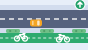 1:07 |
Cycling provisionSet how a street is built for cycling: shared, a painted lane or a separate track. | Cycling | Updated 2 Oct 2026 | |
 0:39 0:39 |
Bike share docksPlace docks for shared bikes. | Shared bikes and scooters | New | |
 0:28 0:28 |
Micromobility rulesSet where shared bikes and scooters may ride and be left. | Shared bikes and scooters | New | |
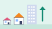 0:43 |
Scale populationGrow or shrink the number of people living in the districts you pick. | Residents | Updated 2 Oct 2026 | |
| 0:38 | District populationSet how many people live in a district. | Residents | Updated 2 Oct 2026 | |
| 0:42 | Income mixChange the mix of incomes in a district. | Residents | Updated 2 Oct 2026 | |
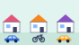 0:44 |
Car ownershipChange how many households in a district own a car. | Residents | Updated 2 Oct 2026 | |
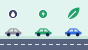 0:46 |
Fleet mixChange the mix of cars residents drive: petrol, diesel or electric. | Residents | Updated 2 Oct 2026 | |
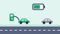 0:38 |
Electric shareChange the share of residents' cars that are electric. | Residents | Updated 2 Oct 2026 | |
| 0:38 | JobsChange how many jobs a district holds. | Work and daily life | Updated 2 Oct 2026 | |
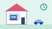 0:38 |
Remote workingChange the share of residents who work from home on a given day. | Work and daily life | Updated 2 Oct 2026 | |
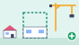 0:37 |
New developmentDraw a new housing or office development. | New places | Updated 2 Oct 2026 | |
| 0:37 | New destinationsAdd shops, schools or other places people go to. | New places | Updated 2 Oct 2026 | |
| 0:52 | EventPlace an event, with how many people come and when. | Visitors | Updated 2 Oct 2026 | |
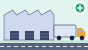 0:39 |
Freight depotPlace a freight depot. | Places | Updated 2 Oct 2026 | |
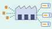 1:14 |
Consolidation centrePlace a centre where goods are gathered before the last stretch. | Places | Updated 2 Oct 2026 | |
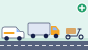 0:31 |
Goods fleetSet the vehicles that carry goods: vans, lorries and cargo bikes. | Fleet and rules | Updated 2 Oct 2026 | |
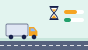 0:23 |
Driver hoursSet how long delivery drivers work and rest. | Fleet and rules | Updated 2 Oct 2026 | |
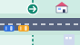 1:14 |
GatewayPlace a gateway where traffic enters the city from outside. | Outside traffic | Updated 2 Oct 2026 | |
| 0:42 | Emergency stationPlace an emergency station for fire engines, ambulances or police. | Stations | Updated 2 Oct 2026 | |
| 0:30 | Close a stationClose an emergency station. | Stations | Updated 2 Oct 2026 |
Nothing here matches.